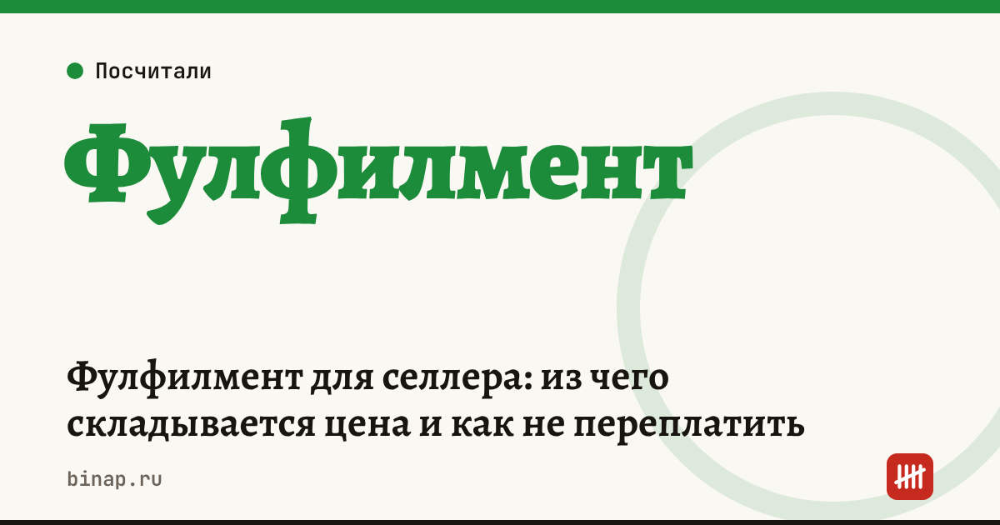

Фулфилмент для селлера: из чего складывается цена и как не переплатить

Фулфилмент берёт на себя приёмку, хранение, упаковку и отгрузку товара на склады маркетплейсов. Цену обычно называют «за единицу», но на деле она складывается из 6–8 операций, и часть из них всплывает только в первом счёте. Ниже — из чего состоит цена, как пересчитать её на одну продажу и что проверить до договора. Тарифы у всех разные, поэтому пример — расчёт редакции на условных цифрах.
Коротко
- Платите не за «единицу», а за операции: приёмка, хранение, маркировка, упаковка, сборка поставки, доставка до склада площадки, возвраты.
- Хранение часто считают за место (паллет, короб) в сутки — медленный товар дорожает именно здесь.
- Возвраты — отдельная операция: приёмка, проверка, переупаковка. При низком выкупе они заметно двигают цену.
- Сравнивайте фулфилменты по стоимости на одну продажу, а не по ставке за упаковку.
- В договоре ищите минимальный чек, ответственность за брак и недостачу и порядок инвентаризации.
Сроки, изменения и разборы для ИП и самозанятых — каждое утро в Telegram и MAX. Подпишитесь, чтобы не пропустить.
Из чего складывается цена
| Операция | Как обычно считают | На что смотреть |
|---|---|---|
| Приёмка | за единицу или за короб | пересчёт поштучно или по коробам |
| Хранение | за паллет, короб или место в сутки | бесплатные дни, минимум мест |
| Маркировка и стикеры | за единицу | стикеры площадки и «Честного знака» — одна ли цена |
| Упаковка | за единицу, зависит от материала | пакет, пузырчатая плёнка, коробка — кто покупает |
| Сборка поставки | за короб или паллет | паллетирование, документы для площадки |
| Доставка до склада | за паллет или короб | какой склад, частота отгрузок |
| Возвраты | за единицу | проверка, переупаковка, утилизация брака |
Пример: стоимость на одну продажу
Расчёт редакции на условных тарифах. Партия — 1 000 единиц одежды, за месяц продаётся 800, выкуп — 80%.
| Операция | Расчёт | Сумма |
|---|---|---|
| Приёмка | 1 000 × 8 ₽ | 8 000 ₽ |
| Маркировка | 1 000 × 6 ₽ | 6 000 ₽ |
| Упаковка | 1 000 × 15 ₽ | 15 000 ₽ |
| Хранение | 4 паллета × 30 дней × 40 ₽ | 4 800 ₽ |
| Доставка до склада | 4 поставки × 3 500 ₽ | 14 000 ₽ |
| Возвраты | 200 × 25 ₽ | 5 000 ₽ |
| Итого | 52 800 ₽ |
На одну проданную единицу: 52 800 ÷ 800 = 66 ₽. «Ставка за упаковку» в 15 ₽ оказалась в 4,4 раза меньше реальной стоимости на продажу (расчёт редакции). Если выкуп упадёт до 60%, а продажи — до 600 штук, стоимость на продажу вырастет примерно до 96 ₽ (возвратов станет 400).
Эту сумму ставьте в юнит-экономику отдельной строкой — проверить прибыль с одной продажи можно в калькуляторе юнит-экономики селлера.
Как не переплатить
- Попросите полный прайс по всем операциям и пример счёта для вашего товара за месяц.
- Посчитайте стоимость на продажу по формуле: все услуги за месяц ÷ число проданных единиц.
- Проверьте договор: ответственность за брак, недостачу и пересорт; как проводят инвентаризацию; минимальный ежемесячный платёж; сроки отгрузки.
- Сравните с работой своими силами: аренда, зарплата кладовщика, материалы. Расходы на маркировку посчитаны в статье Маркировка для селлера: сколько стоит в год.
- Пересматривайте раз в квартал. Если товар лежит дольше месяца, хранение съедает маржу — подумайте о меньших партиях.
Все материалы для продавцов — в разделе Селлерам.
Частые вопросы
Что дешевле — фулфилмент или свой склад? Зависит от объёма. При небольших продажах фулфилмент обычно выгоднее: вы не платите за аренду и людей, когда продаж нет. Сравнивайте по стоимости на одну продажу.
Почему счёт больше, чем обещали? Чаще всего из-за хранения медленного товара, возвратов и доставки до склада — их не учитывают, когда сравнивают «цену за единицу».
Кто отвечает, если товар потеряли на складе фулфилмента? Тот, кто указан в договоре. Проверьте пункт об ответственности и порядок инвентаризации до первой поставки.